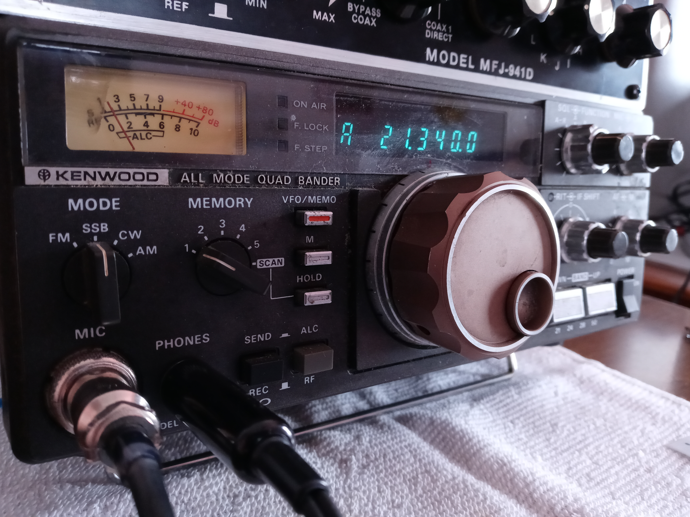

Welcome!
Welcome to the Ham Radio Hub. Here, you can look around and find answers on what you can do as an amateur radio operator.
New to the hobby?
Check out our For Beginners page!
Looking for more resources?
Take a look at our Resources page, where you can find more information from a plethora of web resources.
Need help or just want more information?
Call us or email us using the Contact page!